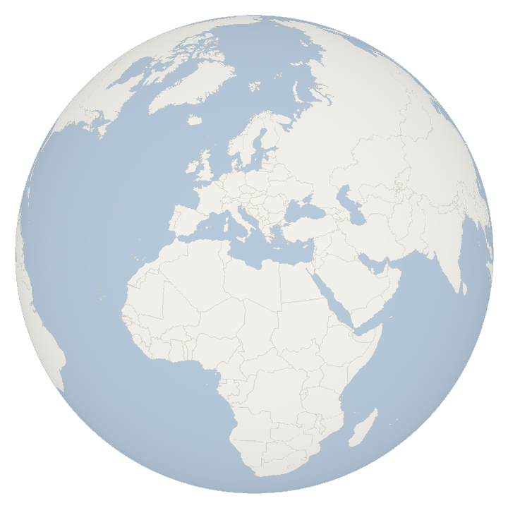
تقويم موحَّد لنشاط الحرائق من قمرَي MODIS وVIIRS مع إنذار مبكر مباشر
الطريقة · نتائج التحقق · الحدود · شرح كل صفحة
فريق Astro Byte · NASA Space Apps Challenge 2026
شهد فرّاج · أحمد اتكيدك · آية سلمان · أحمد الأخرس · تالا يوسف
الألوان:
مبني لتحدّي NASA Space Apps Challenge 2026 · ليس منتجًا رسميًا لناسا · ليس خدمة طوارئ · الخريطة: Natural Earth وOpenStreetMap
الموقع: https://ahmedetk.github.io/jamra/ · البيانات حتى 2026-10-31 · كل الأرقام في هذا الدليل محسوبة من بياناتنا
ترصد الأقمار الصناعية الحرائق على شكل «بؤر حرارية» (hotspots)، أي بكسلات ساخنة في صور القمر. منذ عام 2000 يرصدها جهاز MODIS بدقة 1 كم. وفي 2012 انضم جهاز أدقّ هو VIIRS بدقة 375 م، فصار يرى حرائق أصغر وبؤرًا أكثر للحريق نفسه.
في دولنا الثماني سجّل VIIRS نحو 6.2 أضعاف البؤر التي سجّلها MODIS في الأشهر نفسها. لذلك إذا وصلنا السجلَّين كما هما يظهر ارتفاع كبير بعد 2012 لم يحدث على الأرض: سببه دقة الجهاز الجديد، لا زيادة الحرائق.
جمرة «تُوائم» السجل القديم: تحوّل أعداد MODIS قبل 2012 إلى ما يعادلها بمقياس VIIRS، فيصبح لدينا سجل واحد عادل من 2003 حتى اليوم. ثم تقارن كل شهر بالمعتاد له في السنوات الأخرى، وتتابع بيانات ناسا الجديدة كل 3 ساعات لتنبّه إذا كان الشهر الحالي غير عادي.
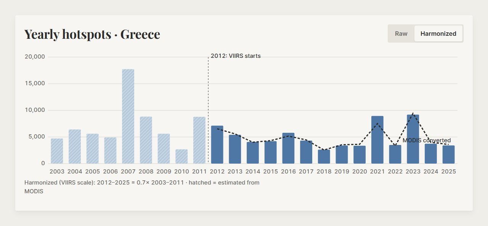
| المستخدم | ماذا يستفيد |
|---|---|
| مديرو الطوارئ وفرق الإنذار المبكر | يعرفون فورًا إن كان هذا الشهر أعلى من المعتاد في منطقتهم (صفحة Alerts وبطاقة «Early warning now» في التقويم). |
| فرق الإطفاء | يرون أحدث البؤر على الخريطة وفي جدول من واجهة ناسا FIRMS مباشرة (صفحة Live Data). |
| مديرو الأراضي والغابات | يعرفون متى يبدأ موسم الحرائق ومتى يبلغ ذروته، وأي السنوات كانت الأسوأ، على مقياس واحد عادل. |
| العلماء والباحثون | سجل متّسق من 2003 حتى اليوم مع نطاق الخطأ، وتنزيل CSV، وطريقة مفتوحة ونتائج اختبار مستقل (هذا الدليل). |
مستفيدون غير مباشرين: المجالس القروية والبلديات والمزارعون، عبر السلطات المحلية والدفاع المدني الذين يستخدمون جمرة.
الموقع من ست صفحات، بلوحة ألوان واحدة: رمادي دافئ فاتح مثل أرض خريطتنا، وبرتقالي «الجمرة» فقط للنار: البؤر و«أعلى من المعتاد»، والزر الأساسي، والصفحة الحالية في شريط التنقل. حالات الاختيار (المنطقة المختارة، التبويب) بالرمادي الفحمي. الأزرق فقط لـ«أقل من المعتاد» في التقويم. العناوين بخط Playfair Display والبيانات بخط Inter. شريط التنقل نفسه في أعلى كل صفحة، والصفحة الحالية تحتها خط برتقالي. الضغط على شعار jamra يعيدك إلى الرئيسية. المنطقة والفترة والشهر المختارة تنتقل معك بين الصفحات عبر الرابط.
صفحة Validation (بالإنجليزية) تعرض الأرقام الأساسية للاختبار المستقل في الأعلى، ثم كل الرسوم والجداول: الأشهر عالية النشاط (المكتشفة والفائتة والإنذارات الخاطئة)، المناطق الصغيرة وقرار المعامل المحلي، مناطق الحرائق واحدة واحدة، الخطأ لكل طريقة، المتوقع مقابل الفعلي، ثبات نسبة VIIRS/MODIS عبر السنين، الخطأ لكل دولة، مقارنة الطرق، ثم الطريقة في 3 خطوات والحدود؛ والرسم السنوي في التقويم بوضع Harmonized هو عرض التحقق: «Validation: harmonized MODIS vs VIIRS, 2012–2025». الروابط القديمة (How It Works وLimits) تفتح القسم المناسب فيها، وCredits تفتح About، مع الإبقاء على خياراتك. يمكن تثبيت الموقع على الهاتف كتطبيق (PWA) ويعمل دون إنترنت من آخر نسخة محفوظة.
نصف كرة أرضية كبير يطلع من أسفل اليمين مثل الأفق، بألوان خريطتنا نفسها (أرض رمادية دافئة، ماء أزرق هادئ، حدود رفيعة)، عليه نقاط برتقالية صغيرة هي بؤر آخر 7 أيام من ناسا. عنوان واحد وزرّان مختلفان.
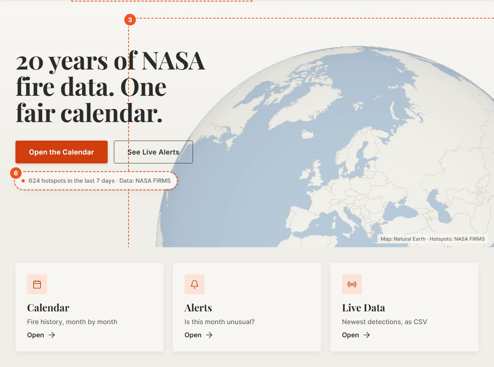
| # | العنصر | ماذا يفعل |
|---|---|---|
| 1 | شريط التنقل | Home · Calendar · Alerts · Live Data، ورابط صغير About. |
| 2 | شارة الحالة | «Live · updated …» أو «Delayed» أو «Outdated»: مدى حداثة بيانات ناسا. |
| 3 | الكرة الأرضية | اسحبها بالفأرة أو بالإصبع لتدويرها؛ تتوقف عند اللمس وتعود للدوران البطيء بعد 5 ثوانٍ تقريبًا. |
| 4 | Open the Calendar | الزر الأساسي: يفتح صفحة التقويم. |
| 5 | See Live Alerts | يفتح صفحة التنبيهات. (مثال إيفيا 2007 صار في صفحة التقويم.) |
| 6 | شارة البيانات المباشرة | عدد البؤر في آخر 7 أيام · Data: NASA FIRMS. وتحت الصورة شريط صغير «Does it work?» برقمين (87% → 40% و82 من 121) يفتح صفحة Validation. |
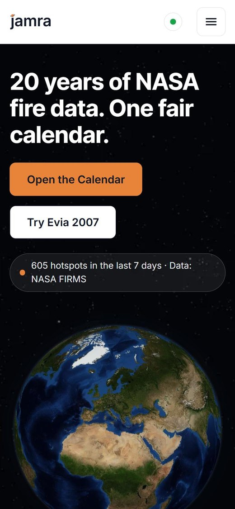
تاريخ الحرائق لأي منطقة: أي الأشهر والسنوات أكثر نشاطًا، ومقارنة كل شهر بالمعتاد.
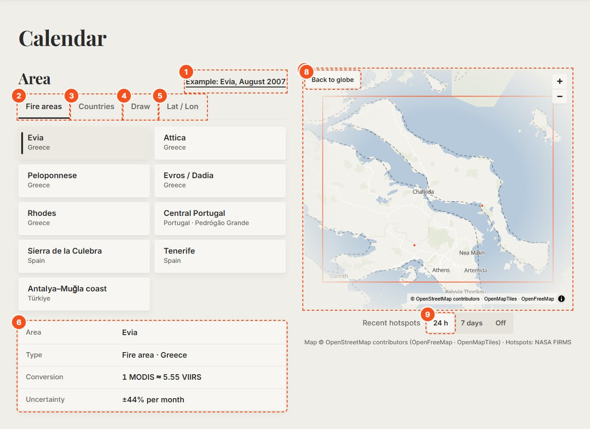
| # | العنصر | ماذا يفعل |
|---|---|---|
| 1 | Example: Evia, August 2007 | رابط صغير بجانب عنوان «Area» يحمّل مثال العرض: إيفيا، آب 2007، مع التفاصيل مفتوحة. |
| 2 | Fire areas | شبكة أزرار مستطيلة متساوية: اسم المنطقة وتحته الدولة. المختارة لها شريط فحمي على اليسار ولون دافئ فاتح. |
| 3 | Countries | الدول الثماني في منطقة التغطية. |
| 4 | Draw | ارسم مضلّعًا أو دائرة على الخريطة لأي منطقة تهمّك. |
| 5 | Lat / Lon | أدخل نقطة ونصف قطر، أو حدود مربع. |
| 6 | جدول المنطقة | المنطقة، النوع، معامل التحويل (1 MODIS ≈ … VIIRS)، ونطاق الخطأ لشهر واحد. |
| 7 | الخريطة | المنطقة المختارة بخط برتقالي وأحدث البؤر؛ تطير الخريطة إلى المنطقة في نحو 3 ثوانٍ، والنمط لا يتغير عند التكبير. |
| 8 | Back to globe | يعيد الخريطة إلى منظر الكرة الأرضية. |
| 9 | Recent hotspots | بؤر آخر 24 ساعة (برتقالي كامل) أو 7 أيام (أفتح) أو إخفاؤها. |
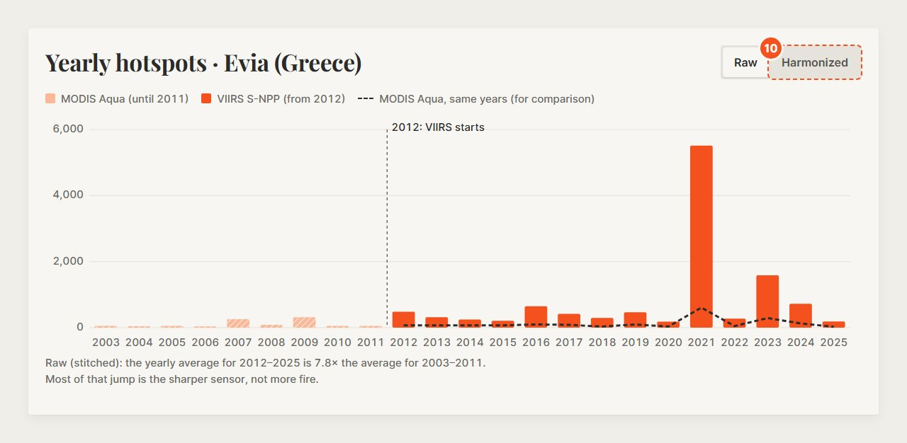
| # | العنصر | ماذا يفعل |
|---|---|---|
| 10 | Raw / Harmonized | يبدّل الرسم السنوي بين السجل الخام والسجل المُواءَم بمقياس VIIRS. |
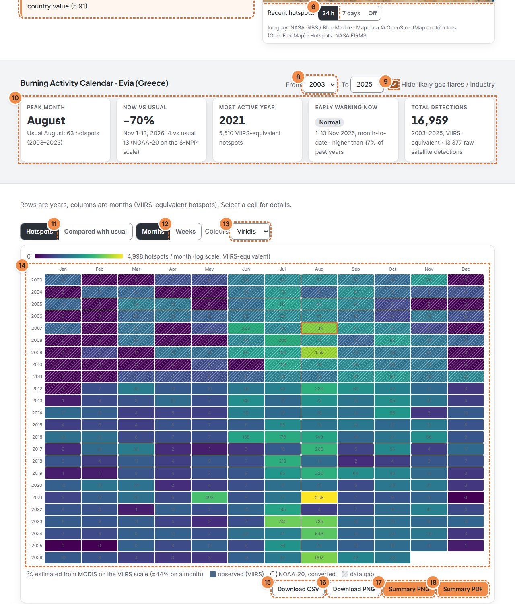
| # | العنصر | ماذا يفعل |
|---|---|---|
| 11 | From / To | السنوات التي يُحسب منها «المعتاد». |
| 12 | Hide gas flares / industry | يحذف خلايا فيها حرارة ثابتة طوال السنة تقريبًا (شعلات غاز، مصانع). |
| 13 | البطاقات | شهر الذروة، الآن مقابل المعتاد، أنشط سنة، الإنذار المبكر الآن، إجمالي الرصد. |
| 14 | Compared with usual | يلوّن الخلايا: أزرق أقل من المعتاد، رمادي دافئ عادي، برتقالي أعلى؛ مع رموز ▲ ▼ ونص في المفتاح. |
| 15 | Weeks | 52 أسبوعًا بدل 12 شهرًا (للدول ومناطق الحرائق). |
| 16 | Colours | لوحة الألوان: Ember (الافتراضية، من الرمادي الدافئ إلى البرتقالي)، أو Viridis أو Cividis أو YlOrRd؛ كلها مناسبة لعمى الألوان. |
| 17 | التقويم | صفوف = سنوات، أعمدة = أشهر. الخلايا المخطَّطة مقدَّرة من MODIS، والمصمتة مرصودة من VIIRS. |
| 18 | CSV / PNG | جدول القيم الشهرية مع المصدر ونطاق الخطأ، أو صورة للتقويم. |
| 19 | Summary PNG / PDF | صفحة ملخص واحدة: المنطقة، الفترة، الشهر مقابل الوسيط، تقويم صغير، المصدر، والاعتراف ببيانات FIRMS. |
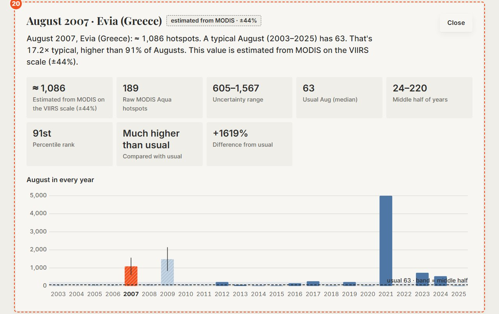
تفاصيل الشهر (20): اضغط أي خلية لترى جملة واضحة، والقيمة ووسم مصدرها (observed · VIIRS أو estimated from MODIS · ±X%)، ونطاق الخطأ، والقيمة الخام، والمعتاد (الوسيط) و«النصف الأوسط» من السنوات، والرتبة المئوية، ورسمًا لنفس الشهر في كل السنوات. يمكن التنقل بين الخلايا بأسهم لوحة المفاتيح والضغط على Enter.
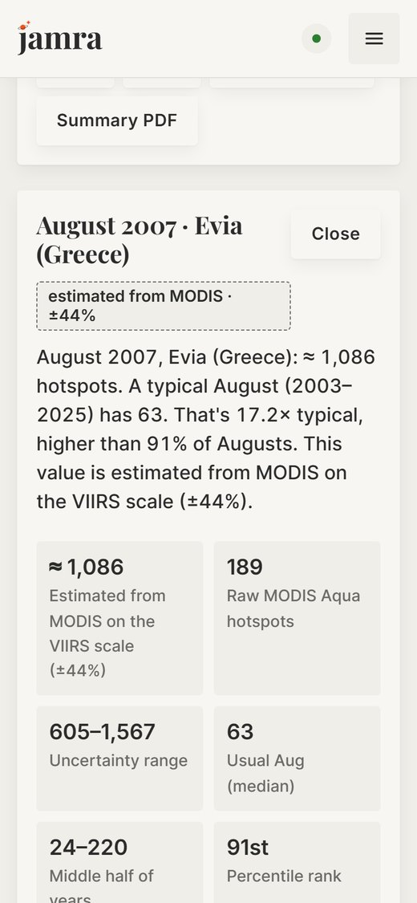
هل هذا الشهر غير عادي الآن؟ بطاقة كبيرة لكل منطقة.
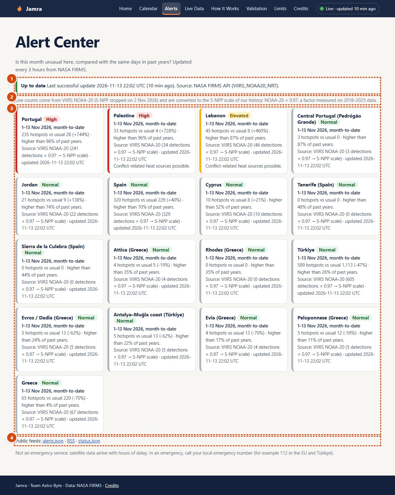
| # | العنصر | ماذا يفعل |
|---|---|---|
| 1 | حالة البيانات | آخر تحديث ناجح؛ وتظهر «Delayed» أو «Partial month» أو «Last update failed» عند الحاجة. |
| 2 | بطاقات التنبيه | المنطقة، الفترة (مثلًا 1–13 Nov، منذ بداية الشهر)، القيمة مقابل المعتاد والنسبة، المستوى، وقت التحديث وحالة البيانات. |
| 3 | ملاحظة المقياس | أعداد NOAA-20 مضروبة في 0.97 لتطابق مقياس S-NPP (توقف S-NPP في 2 Nov 2026). |
| 4 | الخلاصات | alerts.json و RSS و status.json لربط أنظمة أخرى. |
المستويات: Normal، Elevated (≥ المئين 75)، High (≥ 90)، Extreme (≥ 97.5)، مقارنةً بالأيام نفسها في السنوات السابقة. إذا كانت البيانات أقدم من 30 ساعة يظهر «Outdated» بدل أي مستوى.
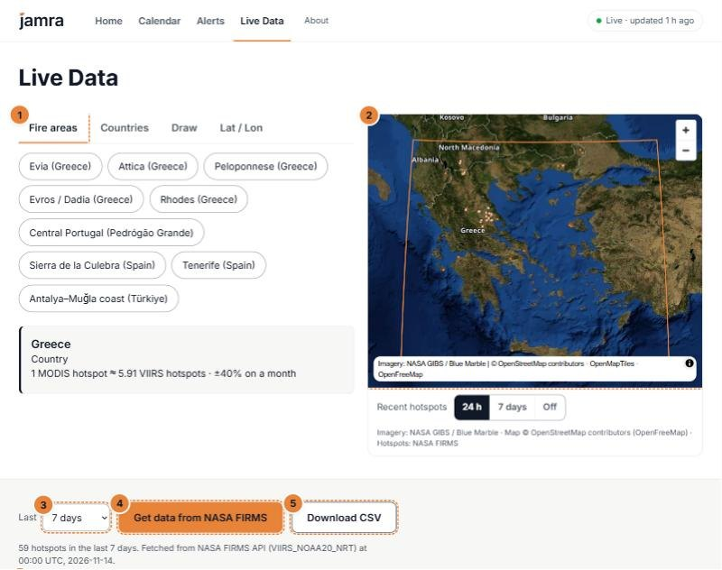
| # | العنصر | ماذا يفعل |
|---|---|---|
| 1 | اختيار المنطقة | نفس طرق الاختيار في التقويم. |
| 2 | الخريطة | البؤر الجديدة؛ مرّر المؤشر فوق نقطة لترى الوقت وقوة الإشعاع FRP. |
| 3 | Last | الفترة: من آخر 24 ساعة حتى 7 أيام. |
| 4 | Get data from NASA FIRMS | يجلب كشوفات NOAA-20 من واجهة ناسا ويعرض وقت الجلب. |
| 5 | Download CSV | يحفظ النتائج لاستخدامها في أنظمة أخرى. |
| 6 | الجدول | التاريخ والوقت والقمر والثقة وFRP والإحداثيات؛ اضغط العناوين للترتيب. |
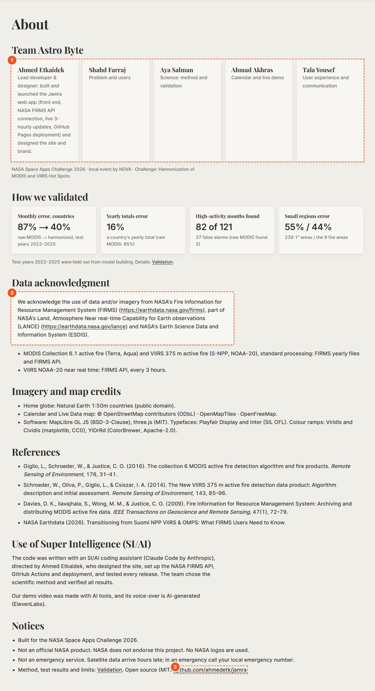
| # | العنصر | ماذا يفعل |
|---|---|---|
| 1 | الفريق | الأعضاء الخمسة وأدوارهم. |
| 2 | الاعتراف ببيانات FIRMS | النص الذي تطلبه ناسا حرفيًا، ثم مصادر الصور والخرائط والمراجع والإفصاح عن الذكاء الاصطناعي. |
| 3 | GitHub | الكود مفتوح المصدر (MIT). |
في الصفحة أيضًا: «Built for the NASA Space Apps Challenge 2026» و«Not an official NASA product» و«Not an emergency service».
MODIS على القمر Aqua وVIIRS على القمر S-NPP يمرّان فوقنا في الوقت نفسه تقريبًا (نحو 1:30 ظهرًا و1:30 ليلًا)، فيريان الحرائق نفسها. بكسل MODIS بعرض 1 كم يقابل نحو 7 بكسلات من VIIRS (375 م)، لذلك يعدّ VIIRS بؤرًا أكثر للحريق نفسه.
من 2012 يعمل الجهازان معًا. استخدمنا 13 سنة تداخل مستقرة (2012–2025 دون 2021) واستبعدنا الأشهر التي تعطّل فيها أحد القمرين. قاعدة اختيار السنوات: نسبة VIIRS إلى MODIS في السنة قريبة (±15%) من نسبة السنة الوسيطة.
لكل دولة ولكل شهر من السنة نحسب: كم بؤرة يرى VIIRS مقابل كل بؤرة يراها MODIS. حين تكون حرائق ذلك الشهر قليلة يصبح الرقم غير مستقر، فنسحبه نحو قيمة الدولة كلها («انكماش»):
k = (V + λ · kcountry) / (M + λ)
حيث V وM مجموع بؤر VIIRS وMODIS في ذلك الشهر عبر سنوات التداخل، وλ = 250 اخترناه بالتحقق المتقاطع.
نضرب أعداد MODIS قبل 2012 في المعامل، فتصبح «بؤرًا معادِلة لـ VIIRS». هذه القيم مقدَّرة، ولها نطاق خطأ: ±40% لشهر الدولة، ±16% لسنة الدولة، ±44% لشهر في منطقة صغيرة.
«المعتاد» لشهر ما هو الوسيط لنفس الشهر في السنوات الأخرى من الفترة المختارة. ثم نحسب الرتبة المئوية ونصنّف الشهر: أقل بكثير، أقل، عادي، أعلى، أعلى بكثير (مع حماية من الأعداد الصغيرة جدًا).
المنطقة الصغيرة (منطقة حريق جاهزة أو مرسومة) تأخذ معاملها من بؤرها هي في سنوات التداخل، مسحوبًا نحو معامل الدولة بالطريقة نفسها (λ = 500): كلما قلّت بؤرها اعتمدت أكثر على الدولة.
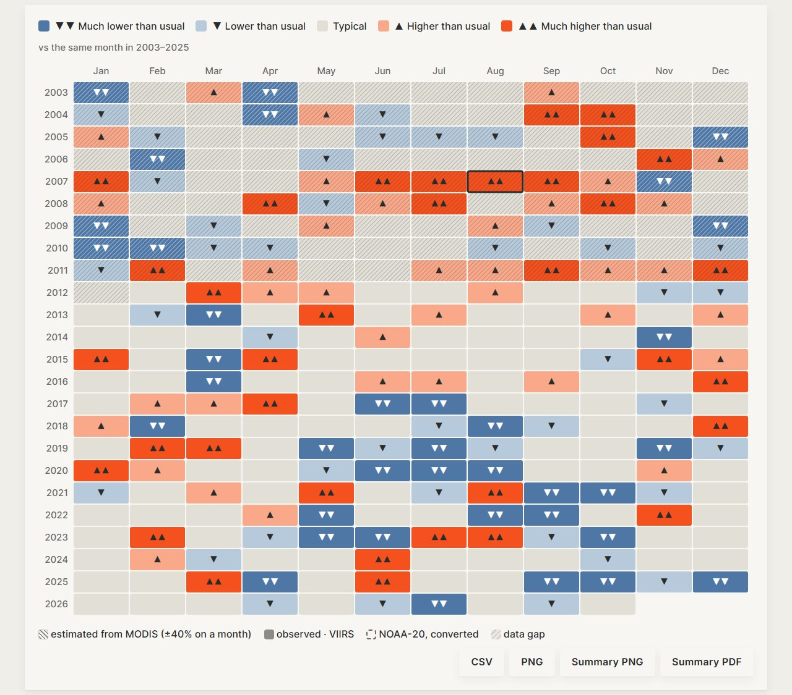
| الرمز | الطريقة | خطأ شهري (MAE) | الخطأ المعتاد % | سنوات الاختبار % | الحكم |
|---|---|---|---|---|---|
| M0 | No harmonization | 393 | 87% | 87% | يُظهر المشكلة فقط: أعداد عصر VIIRS أعلى بكثير. |
| M1 | One global ratio | 116 | 37% | 45% | بسيطة، لكنها تتجاهل اختلاف الدول. |
| M2 | Ratio per country | 113 | 33% | 45% | بسيطة وعادلة لكل دولة. |
| M3 | Ratio per country and month (shrinkage) | 88 | 31% | 40% | تضيف المواسم، وتعتمد على قيمة الدولة حين تكون حرائق الشهر قليلة. ✓ المختارة |
| M4 | Log-log regression per country | 117 | 27% | 35% | منحنى مرن؛ قد ينحرف عند القيم الكبيرة جدًا. |
| M5 | Quantile mapping per country | 112 | 28% | 32% | تطابق التوزيعات؛ تحتاج سنوات كثيرة. |
| — | VIIRS فقط | — | — | — | صادقة لكنها ترمي 2003–2011، تسع سنوات من التاريخ (ومنها اليونان 2007). |
الخطأ الشهري والخطأ المعتاد: تحقق متقاطع بترك سنة واحدة في كل مرة على سنوات المعايرة. اخترنا M3 لأنها أبسط طريقة خطؤها الشهري (MAE) ضمن 5% من الأفضل، والاختيار تم على سنوات التطوير فقط. للأمانة: الطريقتان M4 وM5 أقل في «الخطأ المعتاد %» لكن خطأهما بالأعداد (MAE) أكبر في الأشهر الكبيرة، وهي الأهم للإنذار.
تصميم الاختبار: سنوات التطوير (2012–2020 دون 2021) لبناء النموذج واختيار إعداداته، وسنوات الاختبار (2022، 2023، 2024، 2025) محجوزة لم تُلمس أثناء التطوير. كل نتيجة في هذا القسم من سنوات الاختبار فقط.
الشهر «عالي النشاط» إذا كان «أعلى» أو «أعلى بكثير» من المعتاد (الرتبة المئوية ≥ 75) حسب بيانات VIIRS الحقيقية.
| السجل | اكتُشف (إصابات) | فات | إنذار خاطئ | نسبة الاكتشاف |
|---|---|---|---|---|
| MODIS الخام | 5 | 116 | 0 | 4% |
| بعد المواءمة (M3) | 82 | 39 | 37 | 68% |
| المناطق | معامل الدولة (MAE) | المعامل المحلي (MAE) | الاكتشاف (دولة / محلي) |
|---|---|---|---|
| مناطق الحرائق (9) | 19.7 | 19.6 | 62 / 62 |
| مناطق 1° (239) | 9.23 | 8.97 | 1274 / 1286 |
القرار: اعتُمد المعامل المحلي لأنه خفّض خطأ المناطق الصغيرة في سنوات الاختبار؛ التحسّن صغير لكنه ثابت.
| المنطقة | الخطأ المعتاد (دولة) | الخطأ المعتاد (محلي) | بؤر VIIRS الفعلية |
|---|---|---|---|
| Tenerife (Spain) | 28% | 29% | 1,298 |
| Evia (Greece) | 35% | 31% | 2,769 |
| Central Portugal (Pedrógão Grande) | 34% | 34% | 4,781 |
| Rhodes (Greece) | 37% | 38% | 837 |
| Peloponnese (Greece) | 47% | 46% | 2,068 |
| Evros / Dadia (Greece) | 51% | 55% | 4,978 |
| Antalya–Muğla coast (Türkiye) | 64% | 67% | 1,498 |
| Attica (Greece) | 74% | 69% | 2,353 |
| Sierra de la Culebra (Spain) | 71% | 72% | 2,396 |
| العضو | الدور |
|---|---|
| Ahmed Etkaidek (أحمد اتكيدك) | المطوّر الرئيسي والمصمّم: بنى موقع جمرة وأطلقه (الواجهة، والربط بواجهة ناسا FIRMS، والتحديث كل 3 ساعات، والنشر على GitHub Pages)، وصمّم الموقع والهوية (Lead developer & designer: built and launched the Jamra web app (front end, NASA FIRMS API connection, live 3-hourly updates, GitHub Pages deployment) and designed the site and brand.) |
| شهد فرّاج | قائدة الفريق: أدارت الفريق والخطة، وجهّزت بيانات ناسا FIRMS، وتقود العرض (Team lead: managed the team and the plan, found and prepared the NASA FIRMS data, and leads the presentation.) |
| أحمد الأخرس | الفكرة والتصحيح والعرض: شارك في فكرة جمرة، وصحّح واختبر الموقع كمطوّر مساعد، ويشارك في تقديم العرض (Idea, debugging and presentation: helped create the Jamra idea, debugged and tested the web app as assistant developer, and co-presents the pitch.) |
| آية سلمان | البحث والتحقق: بحثت علم MODIS/VIIRS والمراجع، وراجعت أرقام جمرة مقابل بيانات ناسا، وجهّزت إجابات أسئلة الحكام (Research and validation: researched the MODIS/VIIRS science and references, checked Jamra's numbers against NASA data, and prepared answers for the judges.) |
| تالا يوسف | الفيديو وتجربة المستخدم: صنعت فيديو العرض بترجمة إنجليزية، واختبرت الموقع كمستخدمة جديدة، وقدّمت ملاحظات على التصميم (Video and user experience: made the demo video with English subtitles, tested the site as a first-time user, and gave design feedback.) |
عمل مشترك: اختيار الفكرة والطريقة، واختبار الموقع مع مستخدمين حقيقيين.
| بالعربية | بالإنجليزية | المعنى |
|---|---|---|
| بؤرة حرارية | Hotspot | بكسل ساخن في صورة القمر الصناعي، غالبًا حريق. |
| مواءمة | Harmonization | تحويل أعداد MODIS إلى ما يعادلها بمقياس VIIRS. |
| مقارنة بالمعتاد | Anomaly | كم يختلف الشهر عن الوسيط لنفس الشهر في السنوات الأخرى. |
| الوسيط | Median | القيمة الوسطى: نصف السنوات أعلى منها ونصفها أدنى. |
| الرتبة المئوية | Percentile rank | «أعلى من 90% من السنوات» تعني أن سنة واحدة من كل عشر كانت أعلى. |
| قوة الإشعاع الحراري | FRP | الحرارة التي يطلقها الحريق بالميغاواط. |
| نطاق الخطأ | Uncertainty | المدى المتوقع للقيمة الحقيقية حول التقدير. |
| سنوات الاختبار | Test years | سنوات محجوزة لم تُستخدم في بناء النموذج، لقياس دقته بعدل. |
| إنذار خاطئ | False alarm | قال النموذج «أعلى من المعتاد» ولم يكن كذلك. |
| شبه آني | Near real time (NRT) | بيانات تصل خلال ساعات من مرور القمر. |
We acknowledge the use of data and/or imagery from NASA's Fire Information for Resource Management System (FIRMS) (https://earthdata.nasa.gov/firms), part of NASA's Land, Atmosphere Near real-time Capability for Earth observations (LANCE) (https://earthdata.nasa.gov/lance) and NASA's Earth Science Data and Information System (ESDIS).
كرة الصفحة الرئيسية: Natural Earth (ملكية عامة) · خريطة التقويم: © OpenStreetMap contributors · OpenMapTiles · OpenFreeMap · three.js (MIT) · MapLibre GL JS (BSD-3) · الخطوط Playfair Display وInter (SIL OFL) · لوحات Viridis و Cividis و ColorBrewer. لا نستخدم شعارات ناسا، وناسا لا تتبنّى هذا المشروع.
الكود مفتوح المصدر (MIT): https://github.com/ahmedetk/jamra